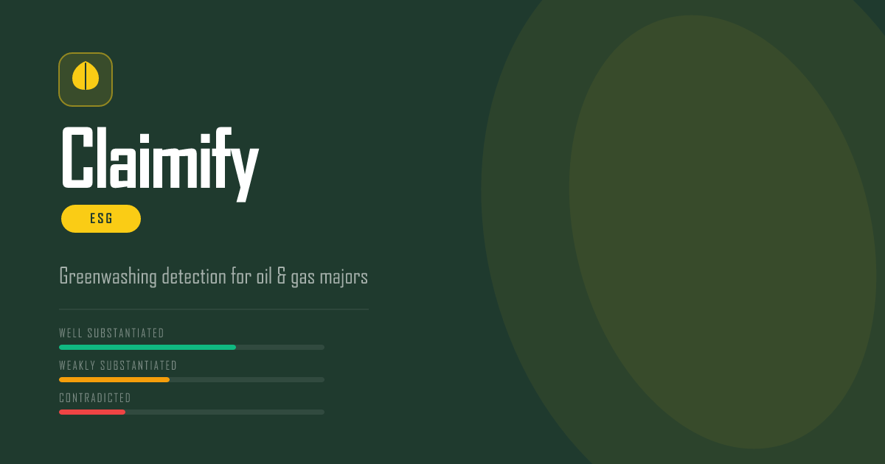

A RAG pipeline that classifies corporate climate claims against NGO evidence, with a traceable rationale for every verdict and a historical pledge tracker measuring follow-through.
Corporate sustainability reports are structurally difficult to audit. Claims range from specific quantified commitments ("reduced Scope 1 emissions by 37% against our 2019 baseline") to vague aspiration ("we support the energy transition"). Claimify is a RAG (Retrieval-Augmented Generation) pipeline that scores each claim against a curated NGO evidence corpus rather than relying on the LLM's training weights alone. Retrieval gives the model citable, up-to-date source material for each claim; generation produces a structured verdict grounded in that material, not in generalities about the sector.
The pipeline has five stages: PDF ingestion, NLP filtering (ClimateBERT + GPT-4o structured extraction), two-stage retrieval (SBERT shortlisting + cross-encoder reranking), LLM scoring (a structured two-step prompt), and materiality adjustment (category-specific multipliers). A separate Commitment Tracker layer reuses the same retrieval stack to score 2021 pledges against 2023-2025 NGO evidence, measuring how much follow-through happened.
The pipeline runs entirely offline. No API calls happen at read time. The frontend reads two pre-generated JSON files, served as static files on Vercel.
Oil and gas sustainability reports are written for multiple audiences at once: shareholder, regulator, and general public. The language reflects this. The same company can, on the same page, disclose a precise Scope 1 reduction figure and an unfalsifiable aspiration in the next paragraph. Distinguishing between these is not a keyword problem or a sentiment problem. It requires knowing whether a claim makes a falsifiable factual assertion and, separately, whether available evidence refutes it.
Existing approaches had a shared gap: they either flagged anything containing "net-zero" or "carbon neutral" (keyword matching) or relied on journalists manually cross-referencing company statements with NGO reports. Neither approach scales, and neither produces a traceable reasoning chain. This pipeline is the automation of that intermediate layer.
The choice to use RAG rather than a prompt-only classifier is deliberate. LLM training weights are frozen at a cutoff date and do not contain the specific Carbon Tracker reports, Reclaim Finance assessments, or InfluenceMap briefings that contradict individual company claims. Giving the model that material at inference time means every verdict can be traced back to specific retrieved documents, not to generalised knowledge about the sector.
| Decision | Why we made it | What we accepted in exchange |
|---|---|---|
| Offline batch, not live API | All scoring runs once per ingestion cycle. The frontend reads a static JSON file. No cost per page-view, no failure modes at read time. | New reports need a full pipeline re-run. There is no live update between cycles. |
| Two-step LLM scoring | A single-step prompt that asked the model to weigh evidence and classify simultaneously inflated the contradicted rate whenever NGO evidence was critical, even for well-quantified claims. Separating the two decisions fixed it. | Two LLM calls per claim rather than one. |
| ClimateBERT before GPT-4o | A 310-page PDF produces thousands of sentences. Running GPT-4o over all of them is expensive and introduces noise. ClimateBERT drops roughly 65% of sentences before extraction, cheaply and locally. | ClimateBERT misclassifies a small fraction of climate sentences as off-topic and drops them permanently. |
| Company-scoped retrieval | Each corpus chunk carries an applies_to field listing relevant company IDs. Retrieval filters by this before cosine search so BP evidence never surfaces for a Shell claim. |
Cross-company sector patterns must be duplicated into each company's scope list manually. |
| Materiality multipliers | A net-zero claim and a biodiversity mention with the same raw LLM score carry different reputational and legal risk. The multipliers encode this as an explicit, version-controlled domain judgement rather than leaving it implicit. | The multiplier values are not empirically calibrated. They are expert judgement and should be revisited. |
| gpt-4o-mini, not gpt-4o | Roughly 10x cheaper per token at comparable accuracy on structured JSON classification. The prompt examples are the primary quality driver; the model choice is a cost trade-off once the eval bar is met. | Higher error rate on edge cases in the well/weakly boundary. |
ClimateBERT on Windows subprocesses: The Commitment Tracker extracts historical claims in a background subprocess. On Windows, PyTorch DLL loading fails in that context. The Tracker substitutes a keyword regex filter for ClimateBERT. The main ingestion pipeline, which runs in the foreground, keeps ClimateBERT. This is a platform limitation, not a design choice, and is noted in the codebase.
Two input streams meet at the retrieval stage. The claims stream processes sustainability PDFs through the NLP pipeline and produces structured claims. The evidence stream ingests NGO sources and builds a vector index. Both feed the RAG retrieval and scoring pipeline. A separate Commitment Tracker branch (dashed, bottom-left) reuses the same retrieval infrastructure with 2021 historical pledges as its input instead of current claims.
Before retrieval can happen, the pipeline needs claims. A 300-page corporate sustainability report typically contains thousands of sentences. Most of them are financial tables, legal disclaimers, headers, and general corporate narrative that has nothing to do with climate commitments. Running GPT-4o over all of them would be slow, expensive, and would pull in a lot of noise. Three steps handle this: sentence splitting, ClimateBERT relevance filtering, and structured claim extraction.
ClimateBERT is the gating step. It runs locally, no API call required, and processes sentences in batches of 32. In practice it drops 60-70% of a typical report. Only what passes goes to GPT-4o for extraction.
MODEL_NAME = (
"climatebert/"
"distilroberta-base-climate-detector"
)
BATCH_SIZE = 32
def predict_batch(
sentences: list[str]
) -> list[bool]:
tokenizer, model = get_model()
inputs = tokenizer(
sentences,
padding=True,
truncation=True,
max_length=256,
return_tensors="pt"
)
with torch.no_grad():
outputs = model(**inputs)
preds = torch.argmax(
outputs.logits, dim=-1
).tolist()
# label 1 = climate-relevant
return [p == 1 for p in preds]
CATEGORIES = [
"net_zero",
"emissions_reduction",
"methane",
"renewables_investment",
"scope_3",
"just_transition",
"biodiversity",
"climate_lobbying",
"other",
]
# Each extracted claim carries:
# category, claim_text,
# target_value, target_unit,
# scope, baseline_year,
# deadline_year
BATCH_SIZE = 15 # sentences per call
# Larger batches cause sentence
# index drift in the model output
| Field | Example | Downstream use |
|---|---|---|
category | net_zero, scope_3, methane | Materiality multiplier lookup; Compare and Filter views |
target_value + target_unit | 37 / percent_reduction | Scorer prompt context; Tracker pledge cards |
deadline_year | 2030, 2050 | Concrete element detection in scorer; Tracker deadline display |
scope | operated_assets, scope_3 | Scorer checks whether a scope qualifier is present |
baseline_year | 2019 | Scorer context (supports concrete element detection) |
page | 47 | Source reference shown in the evidence panel |
Why ClimateBERT and not another GPT-4o call? An early version asked GPT-4o to decide relevance before extraction. It was accurate but doubled the API cost for a task that ClimateBERT handles locally in seconds. The accuracy trade-off at the filter stage is acceptable: a missed sentence means one fewer candidate claim, not a false positive in the final scored output. Precision matters more than recall here.
This is the R in RAG. For every claim, the pipeline retrieves the most relevant passages from the NGO evidence corpus before the LLM ever sees it. The model is grounded in specific documents, not in training-weight generalities about oil companies and climate.
Retrieval uses two stages. SBERT computes cosine similarity across the corpus and returns a top-20 shortlist filtered to the claim's company. The cross-encoder then re-scores every (claim, candidate) pair with full cross-attention, which is significantly more accurate but too slow to run against the full corpus. Top-5 go to the scorer. This two-stage cascade follows the BEIR benchmark's standard pattern.
def cosine_scores( claim_vector: np.ndarray, corpus_vectors: np.ndarray ) -> np.ndarray: # L2-normalise both sides # then dot product equals cosine sim cn = claim_vector / np.linalg.norm( claim_vector ) vn = corpus_vectors / np.linalg.norm( corpus_vectors, axis=1, keepdims=True ) return vn @ cn def search( claim_vector, company_id, k=20 ): records, vectors = load_index() scores = cosine_scores( claim_vector, vectors ) r, s = filter_by_company( records, scores, company_id ) return top_k(r, s, k)
MODEL = (
"cross-encoder/"
"ms-marco-MiniLM-L-6-v2"
)
def rerank(
claim_text: str,
candidates: list,
top_n: int = 5
) -> list:
pairs = [
(claim_text, rec["text"][:512])
for rec, _ in candidates
]
scores = get_model().predict(pairs)
paired = list(zip(
[r for r, _ in candidates],
scores
))
paired.sort(key=lambda x: -x[1])
return paired[:top_n]
| Source | Records | Type |
|---|---|---|
| The Guardian | 152 | News articles via paginated API |
| Carbon Tracker | 74 | PDF chunks from 3 reports |
| Reclaim Finance | 37 | PDF chunks (28) + press releases (9) |
| InfluenceMap | 6 | PDF chunks |
| TPI | 9 | Company assessment pages |
| ClientEarth | 6 | Press releases |
| Global Witness | 6 | Press releases |
| Source | Weight | Basis |
|---|---|---|
| InfluenceMap | 0.95 | Primary quantitative analysis |
| Carbon Tracker | 0.95 | Paris-alignment modelling |
| TPI | 0.92 | LSE-backed management scores |
| ClientEarth | 0.90 | Litigation-grade sourcing |
| Reclaim Finance | 0.88 | Company-specific PDF assessments |
| Global Witness | 0.85 | Investigative journalism |
| Guardian | 0.75 | General environment desk |
Why PDF chunking mattered: Early corpus versions stored whole PDFs as single records. SBERT's 512-token limit meant the model was scoring a truncated fragment of a 30-page report. Switching to 350-word chunks with 50-word overlap grew the Carbon Tracker representation from 3 records to 74 and measurably improved retrieval on Scope 3 claims, where the contradicting evidence tends to appear in the body of a technical appendix rather than the introduction.
The core mechanics are off the shelf: SBERT embeds, cosine ANN shortlists, cross-encoder reranks, GPT-4o-mini generates. That part is documented in a dozen tutorials. The differentiation is in the four design decisions layered on top of the retrieval stack, each motivated by a specific failure we observed rather than a preference for complexity.
| Generic RAG | Claimify RAG | Why the change was necessary |
|---|---|---|
| Retrieve from full corpus | Company-scoped retrieval | Without it, a BP claim retrieved Shell methane documents and scored incorrectly. The applies_to field narrows the candidate pool to company-relevant evidence before SBERT runs. Cross-company contamination in a flat corpus is invisible until you inspect individual retrieved passages. |
| Single LLM call: classify and cite | Two-step classification | Early single-step prompts inflated contradicted verdicts. The model treated NGO criticism as evidence of falsity even when it was sector-wide, not company-specific. Splitting into two questions — well/weakly from claim text alone, then contradicted from evidence — dropped the false-contradicted rate and improved accuracy by roughly 12 percentage points in the v3 iteration. |
| All documents treated equally | Credibility-weighted corpus | InfluenceMap and Carbon Tracker produce primary quantitative analysis. A Guardian environment desk article and a Carbon Tracker financial model should not score equally in reranking. Credibility weights (0.75 to 0.95) scale the cross-encoder score before top-5 selection, so higher-quality evidence is promoted without being the only factor. |
| Single retrieval loop per query | Second-order temporal loop | The Commitment Tracker runs the same retrieval stack a second time with a different query direction: the input is a 2021 pledge, the evidence pool is the 2023-2025 NGO corpus. The LLM is asked not "is this claim supported?" but "has this commitment been kept?" The retrieval mechanics are identical; the epistemology is different. This made temporal accountability scoring possible without building a separate system. |
What this pipeline does not do: The SBERT model is used as-is from HuggingFace. There is no fine-tuning on climate domain text. Retrieval runs in-memory with numpy cosine similarity, not a vector database. There is no HyDE, no self-querying, no iterative retrieval loop. Each of these would likely improve retrieval quality further, but they also increase complexity and inference cost. The current architecture was sized to run offline on a single machine and stay within a predictable API cost budget per pipeline run.
The four design decisions above are not equally important. In practice, two changes drove almost all of the accuracy improvement from the initial 78.3% baseline to the current 86.7%:
The largest single jump was 73.3% to 83.3% when the prompt was restructured to separate the well/weakly decision from the contradicted check. This is not a retrieval improvement; it is a prompt design improvement. The model's tendency to conflate "NGO criticises company" with "claim is false" was the dominant error mode, and separating the two questions removed it.
The second significant jump was 83.3% to 88.3% after PDF chunking. Whole-PDF records truncated at SBERT's 512-token limit, so the model was often embedding a fragment of a title page rather than the technical content. Chunking grew Carbon Tracker from 3 to 74 retrievable records. Scope 3 claims in particular improved because the contradicting evidence typically appears in appendices, not introductions.
Company-scoped retrieval and credibility weights are correctness guardrails rather than accuracy drivers. They prevent specific failure modes (cross-company contamination, low-quality source promotion) rather than lifting the average. The corpus weighting has not been ablated formally; it is possible the accuracy contribution is smaller than expected.
Once retrieval has selected top-5 evidence passages, both the claim text and those passages are passed to gpt-4o-mini in a single prompt. The model returns a class, a risk score, and a short reasoning string. A second LLM call to the rationale generator then produces the user-facing explanation and decision trace, also grounded in the same evidence. This second call is what turns a classifier output into something an analyst can actually read and check.
The scoring prompt went through several iterations. The key structural insight was that asking the model to weigh evidence and decide classification at the same time caused it to treat NGO criticism as a signal to downgrade claims from well_substantiated to weakly_substantiated. That conflated two different questions. The fix was explicit: decide the well/weakly split from the claim text alone first, then and only then check whether the evidence bar for contradicted is met.
def build_user_prompt( claim_text: str, evidence: list[dict] ) -> str: # This is the RAG injection point. # Claim + retrieved docs in one prompt. ev_text = "\n".join( f"[{i+1}] {e['text'][:400]}" for i, e in enumerate(evidence) ) return ( f"CLAIM:\n{claim_text}\n\n" f"RETRIEVED EVIDENCE:\n{ev_text}" ) def score_claim( client, claim_text, evidence ) -> dict: response = client.chat.completions.create( model="gpt-4o-mini", temperature=0.0, response_format={ "type": "json_object" }, messages=[ {"role": "system", "content": SYSTEM_PROMPT}, {"role": "user", "content": build_user_prompt( claim_text, evidence)}, ], ) return json.loads( response.choices[0].message.content )
Step 1: claim text only
Does the claim contain at least one concrete element? A company-owned quantity, a named company deadline, or a completed named deal. If yes, well_substantiated. If no, weakly_substantiated. The retrieved evidence plays no role in this step.
Step 2: evidence check
Does any evidence item name the company and the specific commitment and show it is false or walked back? If yes, contradicted. Sector-wide criticism does not qualify. The bar is high by design.
| Range | Class | Signal |
|---|---|---|
| 0.05 to 0.14 | well_sub. | 3+ concrete elements |
| 0.15 to 0.39 | well_sub. | 1 to 2 concrete elements |
| 0.40 to 0.58 | weakly_sub. | 0 concrete elements / pure aspiration |
| 0.59 to 0.69 | weakly_sub. | Rule 4 exception applies |
| 0.70 to 0.99 | contradicted | Evidence refutes specifically |
MATERIALITY = {
"net_zero": 1.35, # core climate commitment / highest reputational risk
"scope_3": 1.30, # value-chain emissions / roughly 85% of total footprint
"climate_lobbying": 1.25, # integrity signal: lobbying contradicts stated positions
"methane": 1.20, # short-lived but potent / high regulatory attention
"emissions_reduction": 1.15, # Scope 1 and 2
"renewables_investment": 1.10,
"biodiversity": 1.05,
"just_transition": 1.00, # baseline: no uplift applied
}
base_score = r['predicted']['risk_score']
multiplier = MATERIALITY.get(category, 1.0)
green_signal = round(min(1.0, base_score * multiplier), 4)
The Commitment Tracker answers a question the main pipeline does not: of the climate pledges companies made in 2021, how many have they actually kept? It reuses the same retrieval stack but runs it in reverse time: 2021 sustainability reports as input, 2023-2025 NGO evidence corpus as the judge.
The pipeline extracts 710 historical pledges from the 2021 reports, embeds them with the same SBERT model, retrieves the most relevant current evidence for each, and asks GPT-4o-mini to issue a gap verdict. Evidence from 2023-2025 is well-positioned to evaluate 2021 pledges; most of the intermediate deadlines have passed, and the NGO corpus contains direct assessments of company progress against named targets.
# Same SBERT + cross-encoder retrieval # as the main pipeline. # Input: 2021 pledge # Evidence: 2023-2025 NGO corpus VERDICTS = [ "fulfilled", # target met "partially_fulfilled", # progress, not complete "reversed", # abandoned or walked back "too_early", # deadline not yet reached ] # Prompt instruction: if evidence is # sparse, prefer "too_early" over a # forced verdict. Use "reversed" if # company clearly retreated, even # without an explicit statement.
CATEGORY_WEIGHT = {
"net_zero": 2.0,
"scope_3": 1.8,
"methane": 1.4,
"other": 1.0,
}
VERDICT_PENALTY = {
"reversed": 1.0,
"partially_fulfilled": 0.5,
"fulfilled": 0.0,
}
def accountability_score(items):
# 0 = all pledges reversed
# 1 = all pledges fulfilled
# weighted by category + confidence
total_w = penalty_w = 0.0
for r in scored:
w = CATEGORY_WEIGHT.get(
r["category"], 1.0)
wc = w * (r["confidence"] or 0.5)
total_w += wc
penalty_w += (
VERDICT_PENALTY[r["verdict"]]
* wc
)
return round(
1.0 - penalty_w / total_w, 3
)
| Company | Total | Reversed | Partial | Too early | Fulfilled |
|---|---|---|---|---|---|
| Chevron | 124 | 45 | 38 | 41 | 0 |
| BP | 117 | 43 | 36 | 38 | 0 |
| Equinor | 108 | 40 | 32 | 35 | 1 |
| Shell | 102 | 38 | 31 | 32 | 1 |
| ConocoPhillips | 85 | 31 | 26 | 27 | 1 |
| ExxonMobil | 51 | 19 | 16 | 16 | 0 |
| Eni, Repsol, TotalEnergies, Occidental | 123 | 44 | 20 | 59 | 0 |
On the 3 fulfilled cases: The prompt is intentionally conservative about issuing a "fulfilled" verdict. You need positive evidence of completion, not just the absence of negative evidence. In practice most pledges made in 2021 that have passed their intermediate deadlines show up as "reversed" because that is what the 2023-2025 NGO evidence reports. This result reflects the evidence base, not a system artifact.
The eval set is 60 claims hand-labelled by the author using the same rubric encoded in the system prompt. This tests whether the model applies the rubric consistently, not whether the rubric itself is the right one. Those are different questions and the second one is harder. The full accuracy history is shown below; the non-monotonic path (78% to 71% to 88%) is informative about which prompt changes helped and which caused regressions.
| Iteration | Accuracy | What changed |
|---|---|---|
| Baseline prompt | 78.3% | Initial version |
| New evidence sources | 71.7% | Regression: critical NGO evidence confused well/weakly split |
| Strengthen Rule 4 | 73.3% | Evidence must not affect the well/weakly decision |
| Few-shot examples added | 83.3% | Edge-case examples in prompt for boundary claims |
| Rules 4f and 4g | 88.3% | Dates alone not a concrete element; vague counts excluded |
| PDF chunking + rebuild | 86.7% | 1/60 drop after corpus restructure; within noise range |
The well/weakly boundary is the hardest. Rule 4 exceptions, which demote claims containing numbers from external sources (EU targets, IPCC scenarios, third-party studies), frequently cause confusion when a claim mixes company and external numbers in the same sentence. The model struggles to determine whose number it is.
The contradicted class rarely misclassifies. Requiring evidence to name the company, the specific commitment, and show it is false prevents false positives at the cost of some false negatives. That is the right trade-off for a triage tool.
Limitations: Single annotator, 60 claims, no inter-annotator agreement. The rubric encodes one interpretation of "substantiated". ESG analysts, regulators, and journalists would apply different standards. This tool is for triage and comparative analysis, not final determination.

frontend/npm run builddist/node:20-slim buildsnginx:1.27-alpine servesdocker compose upOPENAI_API_KEYGUARDIAN_API_KEY